CELECG - Celestite Crystalline Glaze
FAAO - Fa's All-Opaque Crystalline Glaze
FAC5 - Crystal Number Five Glaze
FO - Octal Crystalline Glaze
G1214M - 20x5 Cone 6 Base Glossy Glaze
G1214W - Cone 6 Transparent Base
G1214Z1 - Cone 6 Silky CaO matte base glaze
G1215U - Low Expansion Glossy Clear Cone 6
G1216L - Transparent for Cone 6 Porcelains
G1216M - Cone 6 Ultraclear Glaze for Porcelains
G1916Q - Low Fire Highly-Expansion-Adjustable Transparent
G1947U - Cone 10 Glossy transparent glaze
G2000 - LA Matte Cone 6 Matte White
G2240 - Cone 10R Classic Spodumene Matte
G2571A - Cone 10 Silky Dolomite Matte glaze
G2826R - Floating Blue Cone 5-6 Original Glaze Recipe
G2826X - Randy's Red Cone 5
g2851H - Ravenscrag Cone 6 High Calcium Matte Blue
G2853B - Cone 04 Clear Ravenscrag School Glaze
G2896 - Ravenscrag Plum Red Cone 6
G2902B - Cone 6 Crystal Glaze
G2902D - Cone 6 Crystalline Development Project
G2916F - Cone 6 Stoneware/Whiteware transparent glaze
G2926B - Cone 6 Whiteware/Porcelain transparent glaze
G2926J - Low Expansion G2926B
G2928C - Ravenscrag Silky Matte for Cone 6
G2931H - Ulexite High Expansion Zero3 Clear Glaze
G2931K - Low Fire Fritted Zero3 Transparent Glaze
G2931L - Low Expansion Low-Fire Clear
G2934 - Matte Glaze Base for Cone 6
G2934Y - Cone 6 Magnesia Matte Low LOI Version
G3806C - Cone 6 Clear Fluid-Melt transparent glaze
G3838A - Low Expansion Transparent for P300 Porcelain
G3879 - Cone 04 Transparent Low-Expansion transparent glaze
GA10-A - Alberta Slip Base Cone 10R
GA10-B - Alberta Slip Tenmoku Cone 10R
GA10-D - Alberta Slip Black Cone 10R
GA10x-A - Alberta Slip Base for cone 10 oxidation
GA6-A - Alberta Slip Cone 6 transparent honey glaze
GA6-B - Alberta Slip Cone 6 transparent honey glaze
GA6-C - Alberta Slip Floating Blue Cone 6
GA6-D - Alberta Slip Glossy Brown Cone 6
GA6-F - Alberta Slip Cone 6 Oatmeal
GA6-G - Alberta Slip Lithium Brown Cone 6
GA6-G1 - Alberta Slip Lithium Brown Cone 6 Low Expansion
GA6-H - Alberta Slip Cone 6 Black
GBCG - Generic Base Crystalline Glaze
GC106 - GC106 Base Crystalline Glaze
GR10-A - Pure Ravenscrag Slip
GR10-B - Ravenscrag Cone 10R Gloss Base
GR10-C - Ravenscrag Cone 10R Silky Talc Matte
GR10-E - Alberta Slip:Ravenscrag Cone 10R Celadon
GR10-G - Ravenscrag Cone 10 Oxidation Variegated White
GR10-J - Ravenscrag Cone 10R Dolomite Matte
GR10-J1 - Ravenscrag Cone 10R Bamboo Matte
GR10-K1 - Ravenscrag Cone 10R Tenmoku
GR10-L - Ravenscrag Iron Crystal
GR6-A - Ravenscrag Cone 6 Clear Glossy Base
GR6-B - Ravenscrag Cone 6 Variegated Light Glossy Blue
GR6-C - Ravenscrag Cone 6 White Glossy
GR6-D - Ravenscrag Cone 6 Glossy Black
GR6-E - Ravenscrag Cone 6 Raspberry Glossy
GR6-H - Ravenscrag Cone 6 Oatmeal Matte
GR6-L - Ravenscrag Cone 6 Transparent Burgundy
GR6-M - Ravenscrag Cone 6 Floating Blue
GR6-N - Ravenscrag Alberta Brilliant Cone 6 Celadon
GRNTCG - GRANITE Crystalline Glaze
L2000 - 25 Porcelain
L3341B - Alberta Slip Iron Crystal Cone 10R
L3685U - Cone 03 White Engobe Recipe
L3724F - Cone 03 Terra Cotta Stoneware
L3924C - Zero3 Porcelain Experimental
L3954B - Cone 6 Engobe (for M340)
L3954N - Cone 10R Base White Engobe Recipe for stonewares
MGBase1 - High Calcium Semimatte 1 (Mastering Glazes)
MGBase2 - High Calcium Semimatte 2 (Mastering Glazes)
MGBase3 - General Purpose Glossy Base 1 (Mastering Glazes)
MGBase4 - Glossy Base 2 Cone 6 (Mastering Glazes)
MGBase5 - Glossy Clear Liner Cone 6 (Mastering Glazes)
MGBase6 - Zinc Semimatte Glossy Base Cone 6
MGBase7 - Raspberry Cone 6 (Mastering Glazes)
MGBase8 - Waxwing Brown Cone 6 (Mastering Glazes)
MGBase9 - Waterfall Brown Cone 6 (Mastering Glazes)
TNF2CG - Tin Foil II Crystalline Glaze
VESUCG - Vesuvius Crystalline Glaze
Insight-Live Shares
77C04E - 50:30:20 Frit 3134 cone 6 base
77E05B - Cone 10R Celadon - Luke Lindoe
77E06B - Lindoe Dark Celadon - Lower COE
77E14A - Cone 10R Red Mustard - Luke Lindoe
77E15A - Cone 10R Yellow Mustard - Luke Lindoe
84-G-05-S - Cone 10R Matte Crystal Iron - Luke Lindoe
G 304 - Cone 10R Crystal Iron Brown - Luke Lindoe
G1002 - LEACH'S CELADON CONE 10R
G1129 - MEDALTA CLEAR GLAZE CONE 8-10
G1214M - Hansen 20x5 Clear Cone 6 Base Glaze
G1214Z - Cone 6 Calcium Matte Base Glaze
G1214Z1 - Cone 6 Calcium Matte v2
G1214Z2 - Cone 6 Calcium Matte + TiO2
G1847 - Cone 10R Robin's Egg Blue
G1916M - COE Adjustable Low Fire Clear Glaze
G1916Q - Cone 05+ Expansion Adjustable Gloss Base
G1916Q2 - G1916Q glaze + 5% silica
G1916Q3 - G1916Q glaze + 10% silica
G1916QL - Cone 05+ Low Expansion Transparent glaze
G1916QL1 - Cone 05+ Lower Expansion glaze
G1916S - Cone 06-04 MgO Matte
G1916S1 - Cone 06-04 MgO (using talc)
G1916V - Cone 2 Clear (based on G1916Q)
G1916W - G1916Q with Iron Fining Agent
G1947U - Cone 10/10R Transparent Base
G2415E - Classic Albany Lithium Brown Glossy
G2415J - G2415E Alberta Slip Brown (less Li)
G2571A - Original Cone 10R Silky Matte Base Recipe
G2571B - Cone 10R Silky Matte Base (improved)
G2571BB - G2571B Rutile Bamboo
G2571C - Cone 10R Silky Matte Blue
G2571D - Cone 10R Silky Matte Red
G2571D1 - Cone 10 Marbled Red Glaze
G2571E - Cone 10R Silky Matte Black
G2576B - Cone 10R Tenmoku Glossy
G2584 - Cone 10R Blue Celadon
G2826A - 50:30:20 Gerstley Borate Cone 6 base
G2826A1 - 50:30:20 Frit 3134 base (fixed)
G2826A2 - 50:30:20 Gillespie Borate Cone 6 base
G2826A3 - 50:30:20 GB Makeover Pottery Glaze
G2826B - GB:Frit Raku Glaze
G2826F - GB Honey Amber 04
G2826G - GB Lavendar Satin Glaze Cone 6
G2826M - Gerstley Borate Antique Green Cone 5
G2826N - Gerstley Borate Raku Base NS/GB
G2826R - Floating Blue Original Cone 6 Glaze
G2826R1 - Floating Blue Using Gillespie Borate
G2826U - Floating Blue using Frit 3134
G2826V - Gerstley Borate Cream Oatmeal Cone 6 recipe
G2850C - Ravenscrag Cone 6 Black Glossy
G2850M-C - Ravenscrag Cone 6 Light Blue Matte
G2850P - TEAL BLUE CONE 6 KAT
G2851A - RAVENSCRAG SLIP Matte Blue - Cone 6
G2851AB - RAVENS FLOATING BLUE Cone 6
G2851D - KAT'S RC MATTE - Cone 6
G2851H - RAVENSCRAG Brown Gold Matte Cone 6
G2880 - Alberta Slip Tenmoku #1
G2880A - Alberta Slip Tenmoku #2
G2881B - Ravenscrag Alberta Slip Celadon
G2890B - Randy's Red Original Cone 6 Glaze
G2894 - Ravenscrag Tenmoku #1
G2894A - Ravenscrag Tenmoku #2
G2908A - Alberta Slip Floating Blue
G2917 - Ravenscrag Floating Blue
G2926 - Perkins Clear
G2926A - Perkins Clear with Frit 3134
G2926B - Cone 6 Clear Glossy Base
G2926BL - G2926B Cone 6 Gloss Black
G2926J - G2926B Reduced COE (Li2O)
G2926S - G2926B Reduced COE (MgO)
G2931 - Worthington Cone 06-2 Clear
G2931F - Zero3 Ulexite Transparent Glaze
G2931G - Zero3 G Low Expansion Low Fire Clear
G2931H - Zero3 H High Expansion Variant
G2931K - Zero3 K Cone 03 Transparent Glaze
G2931L - Zero3 L Low Expansion Variant
G2931L2 - Zero3 L Low Expansion w/F-69
G2932 - Deb's Clear #1 Cone 04-02
G2932A - Deb's Clear #2
G2933 - Gerstley:PV Clay low fire clear
G2934 - Cone 6 Magnesia Matte Base
G2934A - High Dolomite-Testing glaze
G2934BL - G2934 85:15 Adjustable Matte Black
G2934J - G2934 with ZnO for Brown Stains
G2934J1 - G2934 (glossed using ZnO)
G2934Y - G2934 (lower-LOI)
G2934Y1 - G2934Y (Anti-Crawling)
G2934Y2 - G2934Y (Higher COE/Stony)
G2934Y3 - G2934 Super Durable
G2934Y4 - G2934 Super Durable #2
G2934Z - G2934Y Red Using F-69
G2936 - Ravenscrag Low Expansion Cone 6 Base
G2936B - Ravenscrag Low Expansion White Base 2
G2936C - Ravenscrag Original Cone 6 Base Glaze
G2938 - Wright's Water Blue Base
G2941A - Leach's Satin Clear Original
G2941C - Leach's Satin Clear - Craze fix
G3806 - Panama Blue Cone 6
G3806A - Panama Blue 2 - More clay, Copper Oxide
G3806B - Panama Blue 3 - Copper Carbonate
G3806C - Panama Cone 6 Adjustment 2015
G3806D - Panama c6 - Lower COE #1
G3806E - Panama c6 - Lower COE #2
G3806F - Panama c6 - Lower COE #3
G3806K - Panama c6 - Lower COE #7
G3806N - C6 Fluid Clear Final Recipe #10
G3808 - Cone 6 Bright Clear - Shaun Mollonga
G3808A - Cone 6 Bright Clear using Frits
G3813 - Campana Cone 6 Transparent Glaze
G3813B - Campana Clear Lower Expansion #2
G3813C - Campana Clear Low Expansion (no Spodumene)
G3814 - Low Zinc High Feldspar Fritless base
G3822 - Spectrum Clear 700 Dipping Glaze
G3834 - Tenmoku Cone 6
G3840 - Shino Trial Number 1
G3868 - Gold - Cone 6
G3868A - Gold Using Spodumene
G3868B - Gold Using Fusion Frit 493
G3868C - Gold Using Frit #2
G3875 - Tangerine 4 (Orange)
G3875B - Zinc Clear cone 6
G3875C - Tangerine + Orange Stain
G3879 - Cone 04+ UltraClear Glossy Base
G3879C - Cone 04 UltraClear Low-Expansion
G3879E - Cone 04+ UltraClear Glossy Base
G3879F1 - Cone 04+ UltraClear Glossy Base
G3888 - Kieth Davitt High-fluid-melt copper blue
G3892 - Val Cushing Satin White #71
G3903 - Alberta Slip + Frit FZ-16
G3904 - Original Recipe Using Frit 3124
G3904A - 3134 Mistake Recipe Fixed
G3909 - Ravenscrag Cone 10R Matte Blue
G3910 - Fritted version of G1947U #1
G3910A - Fritted version of G1947U #2
G3912A - Surface Tension White Tin
G3914A - Alberta Slip Gloss Black
G3918 - Red Mustard in G2571A Base #1
G3925 - Perfect Clear
G3925B - Perfect Clear Make-Over #1
G3926B - G2926B with Tin/Zircopax
G3926C - G2934 White Tin/Zircopax
G3933 - G2934:G2926B Oatmeal - Cone 6
G3933A - G2934:G2926B Oatmeal Cone 6
G3933E - G3933 Oatmeal Ravenscrag #2
G3933EF - G3933 Oatmeal Ravenscrag #4
G3933G1 - G3933 Oatmeal Alberta Slip + Li
G3939A - Cone 6 Oxidation Marbled Red
G3948 - Red Orange Glazy Original
G3948A - Plainsman Iron Red Orange
G3948A1 - Red Orange - Plainsman Spodumene
G3948A3 - Red Orange - Plainsman Spodumene #2
G3955 - N505 Base Satin White - Opaque
G3966 - Cone 10R S2 - Luke Lindoe
G3971 - Lead Bisilicate Glaze
G3973 - Hilda Ross Rust
G4546 - Pattis Crystal Clear Cone 6
G4594 - 3B as a glaze
GA6-A - Oringal Alberta Slip Amber/Honey base
GA6-F - Alberta Slip Cone 6 Oatmeal
GR10-A - Ravenscrag Cone 10R Transparent Base
GR10-C - Ravenscrag Talc Matte
GR10-CW - Ravenscrag Cone 10R Talc Matte White
GR6-H - Ravenscrag Cone 6 Oatmeal
H0009 - 1945 MEDALTA FILTER CAKE
L2553B - Imco Carbondale Clay - C-Red
L2596E - H550 Casting Body #5
L2596F - H550 Casting Body #6
L2596G - H550 Casting Body #8
L2626 - Barnard Slip
L3127E - Boraq 1
L3127G - Boraq 2
L3127I - Boraq 3
L3127N - Boraq 5 #4 (available materials)
L3146A - Foundry Hill Creme+Nepheline
L3146B - New Foundry Hill Creme
L3146C - FHC + Kyanite
L3146D - FHC + Pyrax
L3164A - Cordierite Flameware - more bentonite, added grog
L3500 - Alberta Slip Original cone 6 base glaze
L3500G - Alberta Slip + Frit 3249
L3500H - Alberta Slip + Frit 3249 and Silica
L3523 - Cone 04 Gerstley Borate matte base
L3523A - Compare Boraq 5 #1 with GB in a glaze
L3523B - L3523 glaze using Boraq 5 L3127L
L3523C - L3523 glaze using Boraq 5 L3127M
L3523D - L3523 recipe using Boraq 5 L3127N
L3617 - Cornwall Stone substitute #2
L3619 - Cornwall Stone Average Analysis
L3660C - Flameware - Very High Pyrax with Molochite
L3660G - Pyrax/Kaolin Flameware
L3660P - Pyrax Flameware (low fire)
L3664A - PV CLAY Feb 2013 Shipment
L3673 - Laguna Barnard Slip Sub
L3685U1 - Zero3 Engobe Recipe
L3685Y - Cone 03 Terrastone 2 Engobe
L3685Z2 - Z2 White Cone 04 Engobe Base (no frit)
L3685Z3 - Z3 White Cone 04 Engobe (5% frit)
L3685Z5 - White Cone 04 Engobe for L4170B (3% frit)
L3685Z6 - Brown Engobe for Snow
L3685Z7 - Cone 04 Brown Engobe for Snow
L3685Z8 - White Cone 2 Engobe for L215, L210, L4170B (2% frit)
L3693E - Alumina Lining for Crucibles
L3693E1 - Zircon Lining for Crucibles
L3693H1 - Plastic Refractory Alumina Body H1
L3724M1 - Redart Fritware #4
L3724M2 - Redart Fritware #5
L3724N - Redart Fritware #1
L3724N2 - Zero3 Stoneware
L3724P - Redart Fritware #2
L3728 - Cone 6 Dolomite Testing Glaze
L3778D - Cone 6 Translucent Grolleg Plastic
L3778D1 - Cone 6 Grolleg Pink/Blue Porcelains
L3778G - Cone 6 Translucent Grolleg Casting
L3798C - M340 Casting Body
L3798G - M340C Casting Body Revision 7
L3802E - Crystal Ice - Cone 10
L3806L - Panama c6 - Lower COE #8
L3840 - Diatomaceous Earth (Ant Killer)
L3868 - Craft Crank - From PotClays, UK
L3868A - Craft Crank - Base
L3868C - Craft Crank Clone 2
L3869 - Crank Industrial - From England
L3869A - Industrial Crank Base
L3894D - PV Calc Mix 4
L3906 - P300 Cone 6 Casting Body
L3911 - Bizen Clay
L3916 - Bizen Duplicate using Plainsman Materials
L3924C - Zero3 Porcelain - Experimental
L3924J - Zero4 Plastic Porcelain
L3924L - Zero4 Casting Porcelain
L3954B - Cone 6 White Engobe Recipe
L3954F - Cone 6 Black Engobe
L3954J - Black Cone 10 Whiteware Engobe Recipe
L3954N - Cone 10 Engobe for H550
L3954R - Super-White Engobe for Cone 6
L3954S2 - White Engobe for M340, M390, L215, L210
L3972 - 98 Mix
L3977 - BGP Low Stoneware Body
L4001 - Plainsman Super Kiln Wash
L4005D - M390 Casting Version 5
L4023F - Proposed H440 Casting Body #5
L4028 - G2571A Rutile Bamboo
L4053B - Cone 6 Black Clay Body - Type 1
L4068 - Barnard Chemical Substitute
L4115J3 - L211 Stnwre 3D:OM4:NS
L4115L2 - L211 3D:OM4:NS:Talc 42 mesh
L4115L2a - L211 3D:OM4:NS:Talc 80 mesh
L4158 - Cimtalc 15 Talc lab test
L4159 - Cimtuff 9115 Talc lab test
L4163 - Red Art Cone 1 Clay Body
L4168G5 - H440C (concentrate) #5
L4168G9 - New H440 Functional Proposal #8
L4170 - L215 Terra Cotta Casting #1
L4170B - Terra Cotta Casting #2
L4170F - Terra Cotta Casting #3
L4208C - MNS Cone 6 Fine Stoneware
L4208D - 3B +200# particles sieved out
L4217G - M370-like Cone 6 Faster Casting
L4227 - Plus Clay
L4228 - Fimo Clay
L4237 - Redart Tile Body
L4239 - H550 Casting Body #7
L4244 - BGP Clay:Flyash F 50:50 Mix
L4244A - Flyash F:Bentonite 10:90
L4245 - LaFarge Fly Ash F:Bentonite 95:5 Mix
L4245F - Fly Ash F:Bentonite:BallClay 80:10:10
L4246 - A2 +200# particles sieved out
L4247 - A3 +200# particles sieved out
L4248 - Old Hickory M23 Ball Clay
L4249 - 3D +200# particles sieved out
L4249A - 3D MNS 325 Mesh
L4249B - 3D 100 mesh
L4264 - Raku Crackle Glaze Base - Frit 3110
L4264A - Raku Glaze Base #1
L4264B - Raku Glaze Base #2
L4264C - Raku Glaze Base #3
L4264D - Raku Glaze Base #4
L4273 - G3806N1 + 2% Zircopax
L4280 - L215 : M390 Mix for Cone 1 Stoneware
L4287 - Midfield Clay Yukon
L4287A - Catchment Clay Yukon
L4292 - Monte Marte Air Hardening Clay
L4293 - DAS Air Drying Clay
L4294 - Sculpey PE08 Oven Bake Clay
L4398 - Ravenscrag Cone 6 Raspberry
L4404A - Refractory Casting Slip
L4404B - Plastic Refractory (heavy duty)
L4404C - Refractory Plastic (low expansion)
L4404D - Refractory Casting (low expansion)
L4410L - L213 NS:Dolo 30:20
L4410P - L213 40:10 Dolo/NS
L4421 - Seed pelleting clay and binder
L4441A - Minspar
L4441B - Minspar Calculated Substitute
L4453C - 3D:A2 Body Base H550 Blend
L4458 - Lithium Flameware Test
L4482B - Alumina Wadding #2
L4484D - 2018 3B+6% 6666 at 100#
L4498 - Low Expansion Super White Cone 6 Fritware
L4498A - Low Expansion Fritware Casting
L4530 - Carbondale M390 #1
L4530A - Carbondale M390 #2
L4532A - Pyrometric cone pressing body #2
L4532B - Cone pressing body #3
L4532D - Cone pressing body #5
L4532F - Cone 5 Cone-casting v.1
L4543 - Firebrick & kiln post/shelf clay - v1.0
L4543B - Firebrick & kiln post clay v2.0
L4543C - Refractory kiln post clay v4.0
L4557 - Volumetric Screw Feeder Design - ESP32 based
L4558 - M390 Casting (M370+C-Red)
L4558A - M390 Cone 6 C-Red Casting #1
L4558B - M390 Cone 6 C-Red Casting #2
L4567 - Cat Litter
L4575 - SIAL Refractory Slip
L4575A - SIAL refractory slip Duplicate
L4588 - Red NZK Cone 6 Porcelain
L4597 - Luke Lindoe Fired Samples
L4599 - Slip for Slipware
L4599A - Slip for Slipware - #5 Ball Clay
L4608 - Kyanite Bisque-Fix, Kiln-Patch
L4655 - Titanium Dioxide in GA6-C
L4655A - GA6-C Titanium + Iron
L4655B - GA6-C Lower Thermal Expansion
L4696 - Cordierite Flameware
L4697 - Flameware body from French mfgr
L4705A - GA6-C Using Frit 3195 and Titanium
L4768D - Cone 6 Black Casting Body - Type 2
L4768E - Cone 6 Black Casting Body - Type 3.1
L4768H - Cone 6 Black Casting Body - Type 3.3
L4807 - M370-like Super-Fast Casting Porcelain
MHSCUL - MASTER RedArt Sculpture Clay
MRG6B - G2850A Ravenscrag Cone 6 Light Blue
MRG6C - Ravenscrag Cone 6 White Glossy
MRG6E - G2850P Ravenscrag Cone 6 Raspberry
MRG6G - G2851H Ravenscrag Cone 6 Light Blue Matte
P4738A - 98 BGP RETEST
P4808 - 45D
P5867 - Sculpture Clay
P6385 - M2 ST
P6821 - L215 Production Run - Mar 2020
P7088 - H440
PC-32 - Amaco Glaze: PC-32 Albany Brown
Insight-Live Shares (also referencing this recipe)
These add technical detail, development info, variations and improvements.
G2934 - Matte Glaze Base for Cone 6
Modified: 2026-06-09 19:45:09
A base MgO matte glaze recipe fires to a hard utilitarian surface and has very good working properties. Blend in the glossy if it is too matte.
| Material | Amount |
|---|---|
| Ferro Frit 3124 | 17.40 |
| Dolomite | 23.50 |
| Silica | 26.90 |
| EP Kaolin | 18.30 |
| Calcined Kaolin | 13.90 |
| 100.00 | |
Notes
A cone 6 boron-fluxed MgO matte developed at Plainsman Clays by Tony Hansen (a link below will take you to its page there). This page contains technical and mixing information about the recipe, their page, under code MG6CDM, contains mixing and usage information.
This recipe has the best suspension and application properties when it is thixotropic (that involves mixing it thinner than normal and gelling it using Epsom salts). Target a specific gravity of 1.43-1.44 (about 90 water to 100 powder, by weight; that means that in 1900g of slurry there is 900 water and 1000 powder). Then about add 1g of Epsom salts per 1000g powder to increase thixotropy. This should make it creamy and it should gel after a few seconds on standing still (add more Epsom salts if needed, but be careful, it is easy to overdo it).
Screen through 80 mesh (there are tiny agglomerates that will not break down without screening).
Important note: The degree of matteness is dependent on the cooling rate of the firing. In our circumstances, fast cooling (e.g. free-fall in a lightly-loaded or smaller kiln) produces the desired silky matte surface and slow cooling (e.g. a heavily loaded kiln) produces a matter and drier surface. Do test firings to determine if your cooling rate will accommodate this or whether you need to blend in some glossy G2926B to shine it up a little (for example, try 75% matte and 25% glossy, the mixing can be done by simply pouring together, volumetrically, the two slurries). One more thing: Certain colors will matte this more than others, so specific adjustments might be needed. Again: Be sure to control production firings so their rate-of-cooling matches that of the test firings.
The degree of matteness we prefer it does not cutlery mark and has good (but not too much) melt flow. This glaze has plenty of SiO2 and Al2O3 and good melt fluidity, these contribute to durability and resistance to leaching. For maximum durability, add silica and cool the kiln slow to retain the matteness (eg. start with 5% addition).
The calcined kaolin is needed (if you use all raw kaolin the glaze will shrink and crack during drying and crawl during firing). If you do not have calcined kaolin make your own by bisque-firing a container of kaolin powder. If you do not have EP Kaolin, just substitute another. If it settles convert some of the calcined kaolin to raw. If it does not dry hard enough or does not suspend well, use more raw kaolin and less calcined.*
Although this is a matte glaze it flows well (it is well melted). If fired ware has pinholes the solution lies elsewhere. Bisque ware as high as possible. If you gel the slurry a little, or preheat the ware, bisque can be even hotter. Try applying a thinner glaze layer and use whatever technique necessary to get an even and quality laydown. If still needed, consider using the double-soak firing schedule.
With certain stains and opacifiers this base can present issues with glaze crawling. It is not completely clear why this is, test in your circumstances before making large batches or glazing high volumes are ware.
Plainsmanclays.com makes this recipe as a premixed powder.
*If you adjust raw:calcined kaolin proportions more than 5%: Raw kaolin has 12% weight loss on firing, more is needed to supply the same amount of SiO2 and Al2O3 to the fired glaze. For example, if you drop the calcined kaolin by 5 you need to increase the raw kaolin by 5.6 to maintain the same overall chemistry (5 + (5 x 12% / 100 = 5.6). If your kaolin is not too plastic you might be able to use all raw kaolin (18.3 + 13.9 + (13.9 x 12% / 100) = 34.
Related Information
G2934 cone 6 DIY MgO matte glaze: Reliable, durable, adjustable, stainable
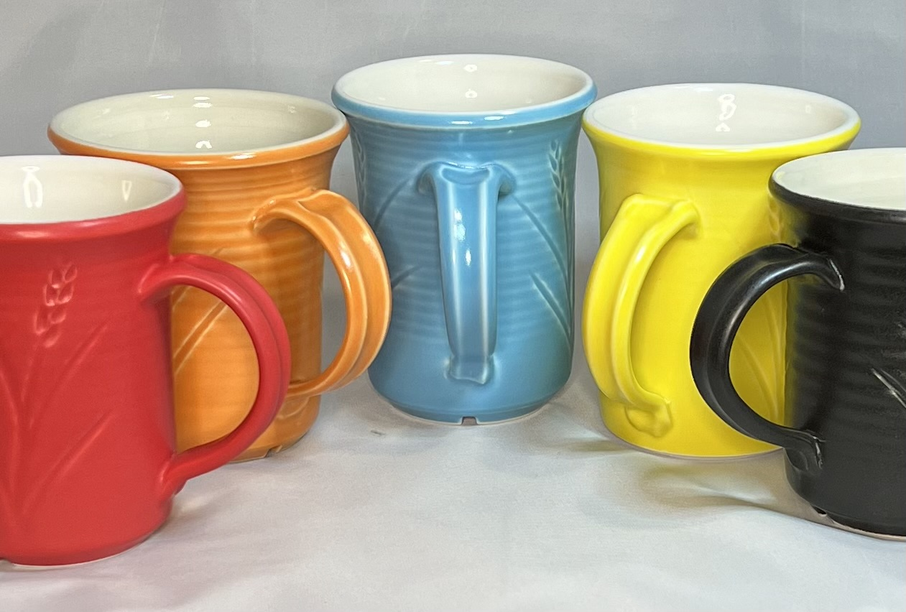
This picture has its own page with more detail, click here to see it.
These pieces were made from Plainsman Polar Ice and fired to cone 6 using variations on the PLC6DS and C6DHSC schedules. The dipping glaze is G2934Y, a recipe variant of G2934 having a finer micro-surface texture (it has the same chemistry but the MgO is sourced from a frit and talc instead of dolomite). These mugs display how well the recipe works with stains and the varying degrees of matteness we can achieve by varying the cooling rate and the percentage of glossy G2926B base blended in. As a magnesia matte, this glaze can have a surface that pleasant to the touch. It fires durable, can be quite matte without cutlery marking, and it has very good slurry and application properties (as a dipping glaze). It has a very low thermal expansion (won’t craze). It works really well with stains (except purples). It melts even better than the glossy!
An ordinary white mug: More difficult to make than you think!

This picture has its own page with more detail, click here to see it.
This is M340S with G2934 matte white outside and G2926B glossy white inside (both have 10% zircopax). Consider what can go wrong. Zircon glazes love to crawl. I either add CMC gum to make it a base coat (or use a combination of tin oxide and zircopax (like G3926C). The clay has granular manganese added to produce the speck, if accidentally over-fired, even half a cone, it will bloat. And the clay body: The outer glaze is ugly on dark-burning clays. And it is drab on porcelains. It does not even look good on this same body if the speckle is not there. Another difficulty: Controlling the degree of matteness. I blend in about 20% of the glossy, otherwise it would fire too matte. And the firing schedule: PLC6DS - its drop-and-hold step is critical, without it the surface would be full of pinholes. Another problem: If the kiln is heavily loaded and cools slower than the programmed ramp-down, the surface will be too matte. Finally, glaze thickness: If it is too thin it will look washed out and ugly. Too thick it will bubble and look pasty.
Mason stains in the G2934 matte base glaze at cone 6
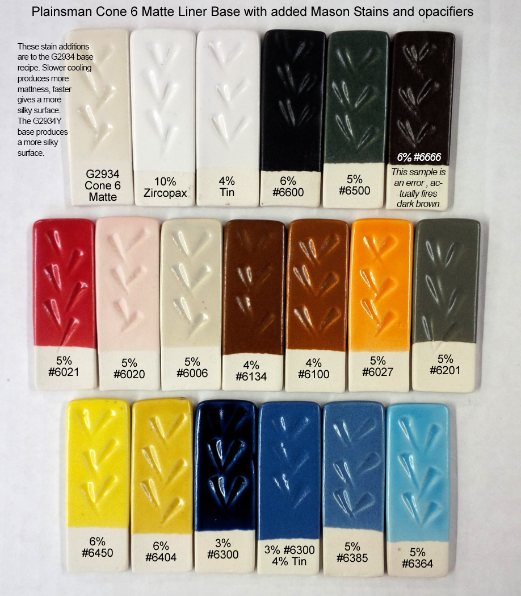
This picture has its own page with more detail, click here to see it.
Stains can work surprisingly well in matte base glazes like the DIY G2934 recipe. The glass is less transparent and so varying thicknesses do not produce as much variation in tint as glossy bases do. Notice how low many of the stain percentages are here, yet most of the colors are bright. We tested 6600, 6350, 6300, 6021 and 6404 overnight in lemon juice, they all passed leach-free. The 6385 is an error, it should be purple (that being said, do not use it, it is ugly in this base). And chrome-tin pink and maroon stains do not develop the color (e.g. 6006). But our G1214Z1 CaO-matte comes to the rescue, it both works better with some stains and has a more crystal matte surface. The degree-of-matteness of both can be tuned by cooling speed and blending in some G2926B glossy base. You can mix any of these into a brushing glaze or a dipping glaze. Be sure to blender mix them to break up any agglomerates.
Our base glazes plus opacifiers on a dark burning body at cone 6
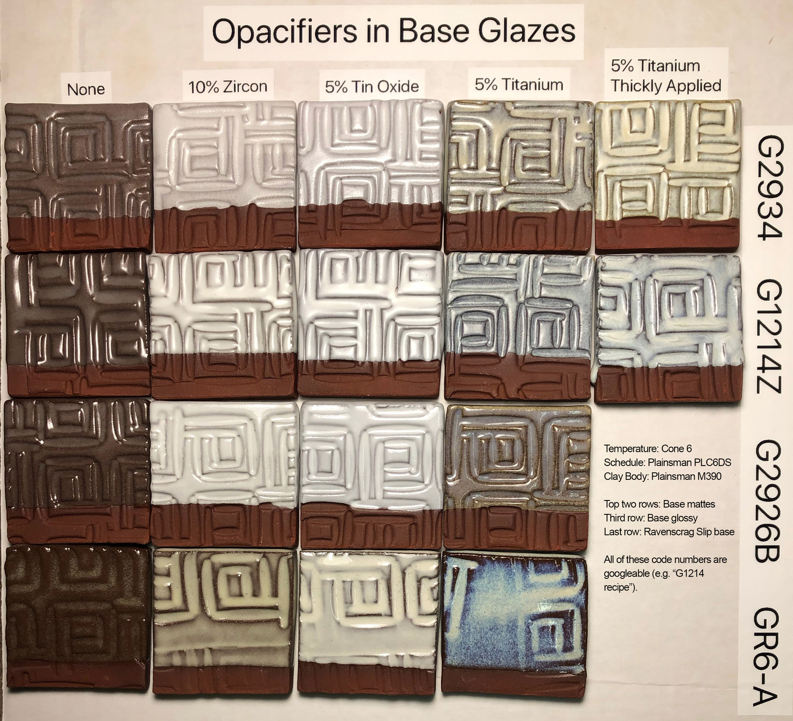
This picture has its own page with more detail, click here to see it.
The body is Plainsman M390. These are commonly used base glazes. The top one is a magnesia matte, next down is a calcia matte. They react very differently to these additions. Notice also the difference when titanium dioxide is applied thickly. Tin oxide fires whiter than zircon (e.g. Zircopax). Each opacifier has issues. Tin is expensive. Titanium is difficult to mix into the slurry (screening required), not as white or opaque, variations in thickness produce more difference in results and it can turn blue. Zircon is more likely to cutlery mark, twice as much is required and it amplifies the color of any iron present.
G2934 Cone 6 Matte with 10% Zircopax and 5% tin oxide
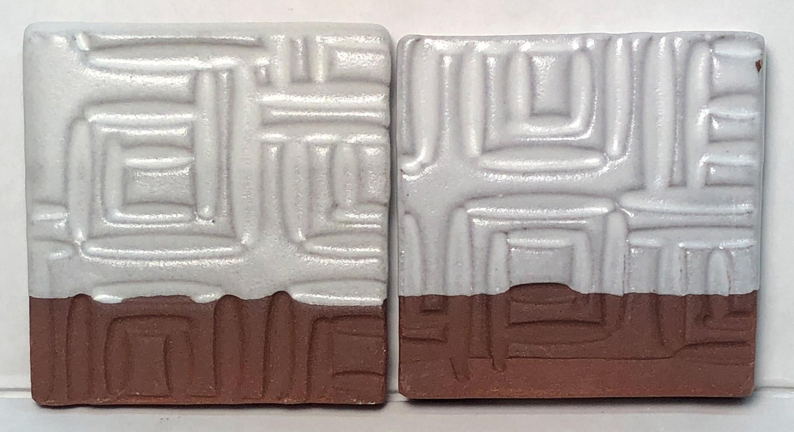
This picture has its own page with more detail, click here to see it.
The body is Plainsman M390. The firing schedule is Plainsman PLC6DS.
Partially and fully opacified cone 6 G1214Z1 matte glaze

This picture has its own page with more detail, click here to see it.
This is the G1214Z1 calcia matte base (as opposed to the magnesia matte G2934). The clay is Plainsman M390. 5% Zircopax was added on the left (normally 10% or more is needed to get full opacity, the partially opaque effect highlight contours well). 5% tin oxide was added to the one on the right (tin is a more effective, albeit expensive opacifier in oxidation). The PLC6DS firing schedule was used.
The G2934 glaze does not work well on dark-burning bodies
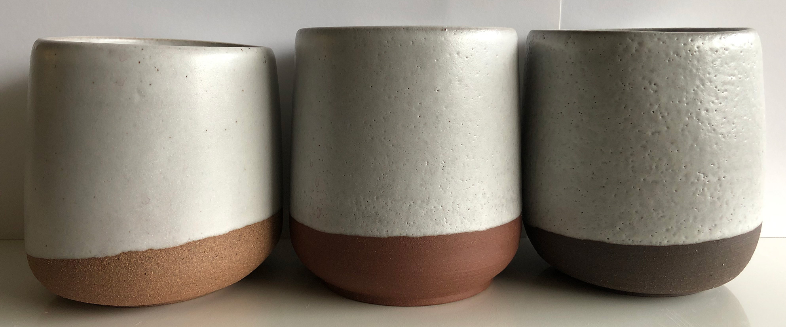
This picture has its own page with more detail, click here to see it.
G2934 is a fantastic glaze, but only on the right body and with the right firing schedule. That is not the case here! This firing was done without any control on the cooling cycle. The added zircopax (to whiten it) stiffens the melt and makes G2934 pinhole-prone on dark burning bodies (because they generate more gases during heatup in the kiln). The clay on the right is Plainsman Coffee Clay, it contains 10% raw umber (a super-gasser). The centre one is Plainsman M390, it bubbles glazes more than buff-burning bodies. The left one is M332, it is a coarse grained and that seems to vent gases well enough here to eliminate the pinholes. The surface of the two on the right would be greatly improved using the C6DHSC firing schedule but, unfortunately, the slow cool would matte the glaze surface, making it really ugly. The PLC6DS drop-and-hold schedule might also reduce the pinholes, without matting the surface. What about without the zircon? There would be fewer pinholes, but micro-bubble clouding, which is not visible here because of the opacity, would make for a truly ugly effect on dark bodies.
Tuning the degree of gloss in a colored matte glaze

This picture has its own page with more detail, click here to see it.
Matte glazes have a fragile mechanism. That means the same recipe will be more matte for some people, more glossy for others (due to material, process and firing differences). In addition, certain colors will matte the base more and others will gloss it more. It is therefore critical for matte glaze recipes to have adjustability (a way to change the degree of gloss), both for circumstances and colors. This recipe is Plainsman G2934 base matte with 6% Mason 6600 black stain added. It has been formulated to be on the more matte side of the scale so that for most people a simple addition of G2926B (M370 transparent ultra clear base recipe) will increase the gloss. That means users need to be prepared to adjust each color of the matte to fine-tune its degree of gloss. Here you can see 5:95, 10:90, 15:85 and 20:80 blends of the matte:gloss recipe bases.
Tune your glaze to the degree of matteness you want
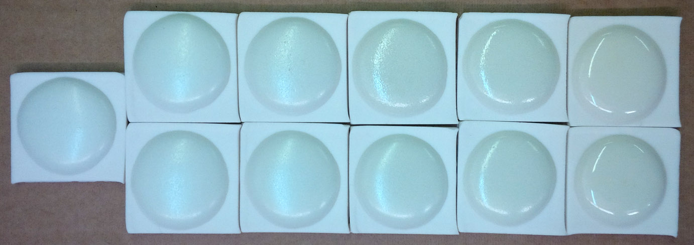
This picture has its own page with more detail, click here to see it.
G2934 is a popular matte for cone 6 (far left). The mechanism of the matteness is high MgO content (it produces a more pleasant surface that cutlery marks and stains less than other mechanisms such as crystallization). But what if it is too matte for you? This recipe requires accurate firings, did your kiln really go to cone 6? Proven by a properly set firing cone? If it did, then we need plan B: Add some glossy to shine it up a bit. I fired these ten-gram GBMF test balls of glaze to cone 6 on porcelain tiles, they melted down into nice buttons that display the surface well. Top row proceeding right: 10%, 20%, 30%, 40% G2926B added (100% far right). Bottom: G2916F in the same proportions. The effects are similar but the top one produces a more pebbly surface.
What if G2934 fires too glossy, how can you increase matteness?
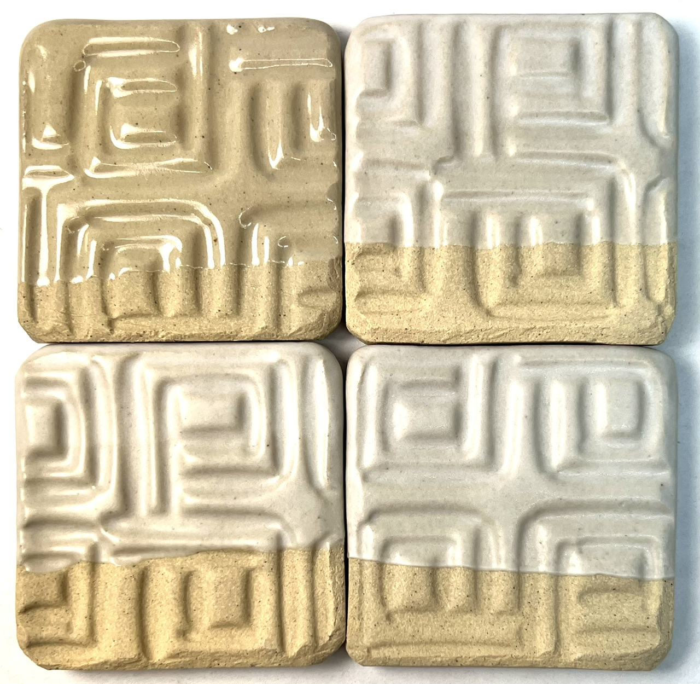
This picture has its own page with more detail, click here to see it.
Typically the G2934 cone 6 magnesia matte recipe fires with a surface that is too matte for functional ware (with cutlery marking and staining problems). This is intentional - it enables users to blend in a glossy base transparent to tune the degree of matteness. However, we have seen variation in the Ferro Frit 3124, serious enough that a recent production batch of glaze came out glossy (upper left in this picture)! This happened despite a C6DHSC slow cool firing. Shown here is a trial with additions of 4% calcined alumina (upper right) and 6 and 8% (bottom). All of these were too matte (1.5% turned up to be good). Although the slow-cool C6DHSC firing is the likely reason for the opacity here, opacity disruption still turned out to be a factor for stain additions (muting the colors slightly) even in faster cool firings. This is a testament to the critical chemistry balance that produces this matte surface. And the need to have adjustment options when inevitable variation occurs. Of course, it is important to use ultra-fine alumina (e.g. 400 mesh) to assure it will dissolve in the melt.
A glaze incompatible with chrome-tin stains (but great with inclusion stains)
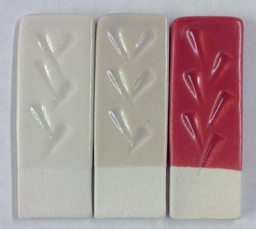
This picture has its own page with more detail, click here to see it.
Left: A cone 6 matte glaze (G2934 with no colorant). Middle: 5% Mason 6006 chrome-tin red stain added. Right: 5% Mason 6021 encapsulated red stain added. Why is there absolutely no color in the center glaze? This host recipe does not have the needed chemistry to develop the #6006 chrome-tin color (Mason specifies 10% minimum CaO, this almost has enough at 9.8%, but it also has 5% MgO and that is killing the color). Yet this same glaze produces a good red with #6021 encapsulated stain at only 5% (using 20% or more encapsulated stain is not unusual - so achieving this color with only 5% is amazing).
Matte cone 6 glazes have identical chemistry but one melts more. Why?

This picture has its own page with more detail, click here to see it.
These are 10 gram GBMF test balls that we melted on porcelain tiles at cone 4 (top two) and cone 6 (bottom two). They compare the melt fluidity of G2934 (left) and G2934Y (right). The Y version sources its MgO from frit and talc (rather than dolomite). It is a much more fluid melt because the frit is yielding the oxides more readily. But Y has a key benefit: It has a much lower LOI, producing fewer entrained air bubbles and therefore fewer surface defects. And, even though it runs much more, it has the same matte surface! As long as it is applied at normal thickness, the extra melt fluidity does not cause any running. And it has another benefit: Less cutlery marking issues. It is actually a very durable and practical food surface glaze, having a low thermal expansion that fits almost any body. Although these appear glossy here, on ware they have the identical pleasant silky matte surface.
Adding an opacifier can produce cutlery marking

This picture has its own page with more detail, click here to see it.
This is G2934 cone 6 matte (left) with 10% zircon (center), 4% tin oxide (right). Although the base unopacified recipe does not cutlery mark the other two do. Although the marks clean off all of the two on the right, the zircon version (in this case Zircopax) version has the worst and is difficult to clean. Thus, a small change is all that is likely needed. One solution is to reduce the matteness of this glaze, moving to more toward a satin surface. A way to do this is to line-blend in a glossy glaze to create a compromise between the most matteness possible yet a surface that does not mark or stain. Another option is to switch to 400 mesh silica in the recipe, that will enable many more of the particles to go into solution in the melt, thus increasing the gloss a little (an improving the firing surface in other ways).
A good matte glaze. A bad matte glaze.

This picture has its own page with more detail, click here to see it.
A melt fluidity comparison between two cone 6 matte glazes. G2934 is an MgO saturated boron fluxed glaze that melts to the right degree, forms a good glass, has a low thermal expansion, resists leaching and does not cutlery mark. G2000 is a much-trafficked cone 6 recipe, it is fluxed by zinc to produce a surface mesh of micro-crystals that not only mattes but also opacifies the glaze. But it forms a poor glass, runs too much, cutlery marks badly, stains easily, crazes and is likely not food safe! The G2934 recipe is google-searchable and a good demonstration of how the high-MgO matte mechanism (from talc) creates a silky surface at cone 6 oxidation the same as it does at cone 10 reduction (from dolomite). However it does need a tin or zircon addition to be white.
G2934 using Fusion Frit F-19 instead of Ferro 3124

This picture has its own page with more detail, click here to see it.
G2934 is a popular recipe and there has been alarm recently because of the difficulty in getting the Ferro frit and the variation in its quality in recent years. This motivated us to get a supply of the Fusion equivalent, F-19. When doing substitutions like this we do testing in glazes and with melt fluidity tests - like this GLFL test.
Yikes. Cutlery marking this bad on a popular glaze!

This picture has its own page with more detail, click here to see it.
An example of how a spoon can cutlery mark a glaze. This is a popular middle temperature recipe used by potters. The mechanism of its matteness is a high percentage of zinc oxide that creates a well-melted glaze that fosters the growth of a mesh of surface micro-crystals. However these crystals create tiny angular protrusions that abrade metal, leaving a mark. Notice the other matte flow on the left (G2934), it not only has a better surface (more silky feel) but also melts much less (its mechanism is high MgO in a boron fluxed base). It is does not cutlery mark at all!
Is the V.C. 71 pottery glaze a true matte?
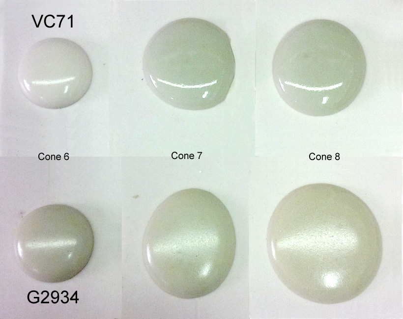
This picture has its own page with more detail, click here to see it.
The top glaze is V.C. 71, a popular matte cone 6 glaze used by potters. Bottom is G2934 matte, a public domain recipe produced by Plainsman Clays. The latter is a high-MgO matte, it melts well and does not cutlery mark or stain easily. As evidence that it is a true matte, notice that it is still matte when fired to cone 7 or 8. V.C. 71, while having a similar pleasant silky matte surface at cone 6, converts to a glossy if fired higher. This suggests that the cone 6 matteness is due to incomplete melting. For the same reason, it is whiter in color (as soon as it begins to melt and have depth the color darkens).
Zircopax, tin oxide, titanium as opacifiers in four base glazes

This picture has its own page with more detail, click here to see it.
The body is Plainsman M390. Firing is the cone 6 PLC6DS schedule. Each horizontal row is a commonly-used base glaze. The top one is a magnesia matte, the next one down is a calcia matte, row 3 is G2926B glossy and row 4 is Ravenscrag Slip+frit. The two mattes behave very differently from each other with the additions of opacifier. Thickly applying an opacified glaze will obviously affect visual character (column 4). Tin oxide fires whiter than zircon (e.g. Zircopax). If you like the G2934 recipe, consider the G2934Y variant for better melting.
G2934 fired at cone 7 on Plainsman M370, P300 and M340
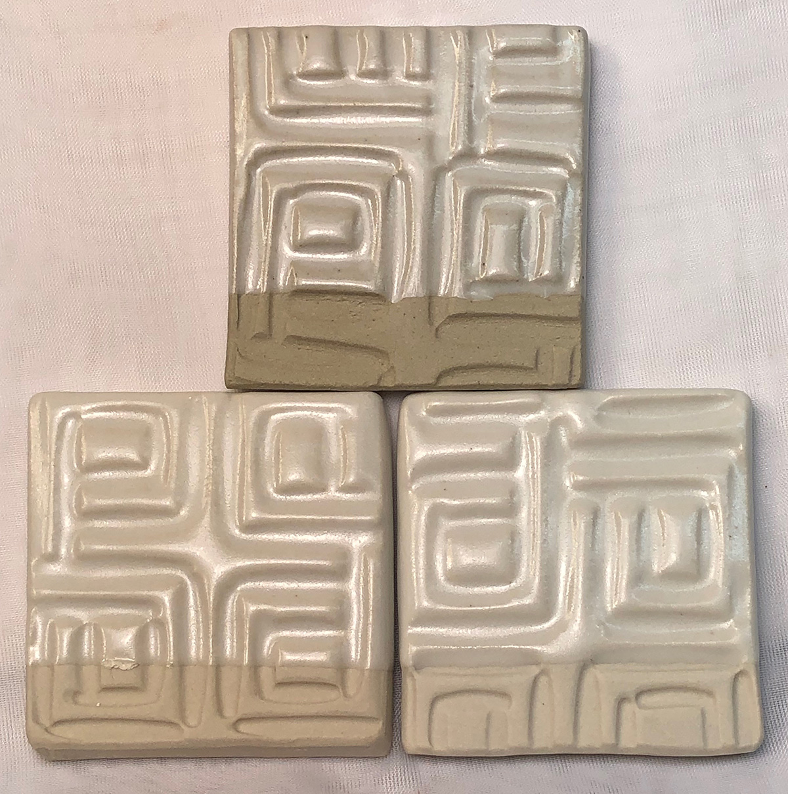
This picture has its own page with more detail, click here to see it.
These bodies all fire more vitreous at cone 7. And the glaze melts to a more pleasant silky surface, looking very similar to the G2934Y version.
The next supply crisis will hit commercial glazes first.
Cope better this time by knowing DIY glaze mixing.
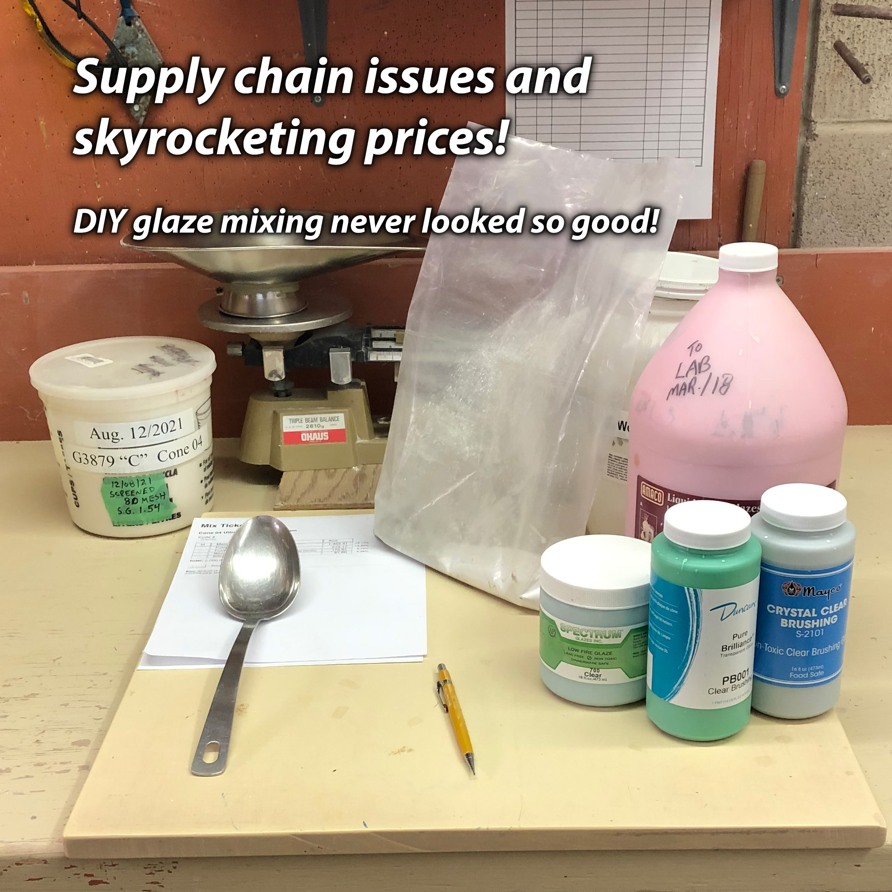
This picture has its own page with more detail, click here to see it.
As potters, we learned that no one is affected by supply chain problems more than prepared glaze manufacturers; they have complex recipes that require complex supply chains. It wasn't just availability; product consistency was also affected. It is again time to think about DIY, to start learning how to weigh out the ingredients to make at least some of your own. Arm yourself with good base recipes that fit your clay bodies (without crazing or shivering). Add stains, opacifiers and variegators to the bases to make anything you want. Admittedly, ingredients in your recipes can also become unavailable! But DIY as about options. When you "understand" glaze ingredients and what each contributes to the recipe and oxide chemistry, you are equipped to go well beyond weathering material supply issues. You will improve recipes, not just adjust them, to accommodate alternative materials. It is not rocket science; it is just work accompanied by organized record-keeping and good labelling.
Commercial glazes on decorative surfaces
Your own on food surfaces

This picture has its own page with more detail, click here to see it.
These cone 6 porcelain mugs are hybrid. Three coats of a commercial glaze painted on the outside (Amaco PC-30) and my own liner glaze, G2926B, poured in and out on the inside. When commercial glazes (made by one company) fit a stoneware or porcelain (made by another company) it is by accident, neither company designed for the other! For inside food surfaces make or mix a liner glaze already proven to fit your clay body, one that sanity-checks well (as a dipping glaze or a brushing glaze). In your own recipes you can use quality materials that you know deliver no toxic compounds to the glass and that are proportioned to deliver a balanced chemistry. Read and watch our liner glazing step-by-step and liner glazing video for details on how to make glazes meet at the rim like this.
Links
| Recipes |
G2000 - LA Matte Cone 6 Matte White
A silky zinc-fluxed matte used historically across North America |
| Recipes |
G2926B - Cone 6 Whiteware/Porcelain transparent glaze
A base transparent glaze recipe created by Tony Hansen, it fires high gloss and ultra clear with low melt mobility. |
| Recipes |
G2928C - Ravenscrag Silky Matte for Cone 6
Plainsman Cone 6 Ravenscrag Slip based glaze. It can be found among others at http://ravenscrag.com. |
| Recipes |
G1214Z1 - Cone 6 Silky CaO matte base glaze
This glaze was born as a demonstration of how to use chemistry to convert a glossy cone 6 glaze into a matte. |
| Recipes |
G2934Y - Cone 6 Magnesia Matte Low LOI Version
The same chemistry as the widely used G2934 but the MgO is sourced from a frit and talc instead of dolomite. It has a finer surface, less cutlery marking and staining. |
| Glossary |
Matte Glaze
Random material mixes that melt well overwhelmingly want to be glossy, creating a matte glaze that is also functional is not an easy task. |
| Glossary |
Magnesia Matte
Magnesia matte ceramic glazes are “microstructure mattes” while calcia mattes are “crystal mattes”. They have a micro-wrinkle surface that forms from a high viscosity melt and microscopic phase separation, both of which prevent levelling on freezi |
| Glossary |
Limit Formula
A way of establishing guideline for each oxide in the chemistry for different ceramic glaze types. Understanding the roles of each oxide and the limits of this approach are a key to effectively using these guidelines. |
| Glossary |
Base Glaze
Understand your a glaze and learn how to adjust and improve it. Build others from that. We have bases for low, medium and high fire. |
| Glossary |
Thixotropy
Thixotropy is a property of ceramic slurries of high water content. Thixotropic suspensions flow when moving but gel after sitting (for a few moments more depending on application). This phenomenon is helpful in getting even, drip-free glaze coverage. |
| Glossary |
Cone 6
Also called "middle temperature" by potters, cone 6 (~2200F/1200C) refers to the temperature at which most hobby and pottery stonewares and porcelains are fired. |
| Articles |
The Right Chemistry for a Cone 6 Magnesia Matte
|
| Articles |
Concentrate on One Good Glaze
It is better to understand and have control of one good base glaze than be at the mercy of dozens of imported recipes that do not work. There is a lot more to being a good glaze than fired appearance. |
| Articles |
G1214Z Cone 6 matte glaze
This glaze was developed using the 1214W glossy as a starting point. This article overviews the types of matte glazes and rationalizes the method used to make this one. |
| Articles |
Where do I start in understanding glazes?
Break your addiction to online recipes that don't work or bottled expensive glazes that you could DIY. Learn why glazes fire as they do. Why each material is used. How to create perfect dipping and brushing properties. Even some chemistry. |
| Articles |
Reducing the Firing Temperature of a Glaze From Cone 10 to 6
Moving a cone 10 high temperature glaze down to cone 5-6 can require major surgery on the recipe or the transplantation of the color and surface mechanisms into a similar cone 6 base glaze. |
| URLs |
https://plainsmanclays.ca/data/index.php?product=12925
G2934 Cone 6 Matte at PlainsmanClays.com |
| URLs |
https://insight-live.com/insight/share.php?z=y9rvvqsPy4
G2934Y variations for fired hardness, COE adjustment, less crawling, etc G2934Y is a popular recipe used worldwide in industry and by potters and hobbyist. This page shows it, and four variations, that adjust for different purposes. All have the same chemistry, but source the needed oxides from different materials. |
| Firing Schedules |
Cone 6 Drop-and-Soak Firing Schedule
350F/hr to 2100F, 108/hr to 2200, hold 10 minutes, freefall to 2100, hold 30 minutes, free fall |
| Media |
Thixotropy and How to Gel a Ceramic Glaze
I will show you why thixotropy is so important. Glazes that you have never been able to suspend or apply evenly will work beautifully. |
 PayPal | No tracking, No ads, No paywall, No transient content! Just organized, concise information constantly updated and improved. Was this helpful? Consider supporting me. |
XML to Paste Into Insight-live
<?xml version="1.0"?> <recipes version="1.0" encoding="UTF-8"> <recipe name="Matte Glaze Base for Cone 6" keywords="A base MgO matte glaze recipe fires to a hard utilitarian surface and has very good working properties. Blend in the glossy if it is too matte." id="121" date="2026-06-09" codenum="G2934" altcodenum="MG6CDM"> <recipelines> <recipeline material="Ferro Frit 3124" amount="17.400"/> <recipeline material="Dolomite" amount="23.500"/> <recipeline material="Silica" amount="26.900"/> <recipeline material="EP Kaolin" amount="18.300"/> <recipeline material="Calcined Kaolin" amount="13.900"/> <url url="https://digitalfire.com/recipe/121" descrip="https://digitalfire.com/recipe/121"/> </recipelines> <urls/> </recipe> </recipes>
| By Tony Hansen Follow me on        |  |
Got a Question?
Buy me a coffee and we can talk 

https://digitalfire.com, All Rights Reserved
Privacy Policy